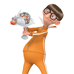

Ръководител на научно-техническата университетска лаборатория Гру Наков. Освен че има голям нос, който определено му помага в надушването на грешен код, също така той е и човек с големи амбиции и дръзки идеи! За реализацията на целите използва нови неориентирани студенти! За да им е гадно!
Нефарио Димитров
Злодей първи ранг д-р Нефарио Димитров. Въпреки че се придвижва сравнително бавно с личното си МПС (което е проектирано с JAVA Engine), мисълта му е по-бърза от светлината! На него се пада честа да посвети студентите и да ги преведе през дебрите на зловещия код (за доброто на човечеството, а може би и на вселената).

Вектор Банкин
Злодей втори ранг Вектор Банкин. Виртуоз в изобразителните изкуства, той е достигнал висоти, въпреки че го е страх от височините Hate Height! Както името ни подсказва той е изключително праволинеен. Погледът му е като точка и посока. Любимият инструмент за рисуване в HTML е водният му пистолет марка DivWrapper, а оформянето на CSS го постига с едно рязко, но прецизно движение с нож от риба меч. Обича пуканки! Мрази криениците!
Луси Свиларова
Злодей трети ранг Луси Свиларова. Тя е елегантна фина дама, която е пълна с изненади. Млада и абцизиозна тя е като онези неща в живота, които се появяват точно тогава, когато най-малко ги очакваш. Разполага с огроен арсенал от приставки, които са в състояние буквално да ви изключат от захранването. Когато сте в близост до нея очаквайвате всевъзможното.